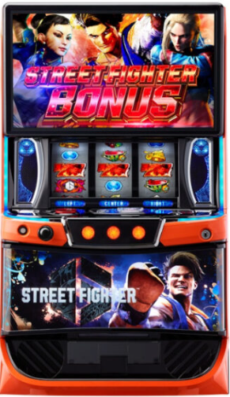

目次

スマスロ ストリートファイター6STREET FIGHTER 6 ｜ エンターライズ
自力バトルST搭載のAT機。ファイターズバトル（ST）の勝率はランクで変動し、50〜80%以上。純増約6.0枚/Gの高速出玉が魅力です。
スマスロ ストリートファイター6 スペック・機械割
| 設定 | ST初当たり | ボーナス | 機械割 |
|---|---|---|---|
| 1 | 1/278.6 | 1/487.6 | 97.4% |
| 2 | 1/272.1 | 1/473.3 | 98.4% |
| 3 | 1/264.6 | 1/447.2 | 100.4% |
| 4 | 1/258.9 | 1/425.6 | 103.2% |
| 5 | 1/255.3 | 1/405.9 | 106.1% |
| 6 | 1/252.6 | 1/389.9 | 110.0% |
遊技時間別・理論差枚数の目安
| 設定 | 機械割 | 差枚数/1h | 差枚数/3h | 差枚数/5h | 差枚数/8h |
|---|---|---|---|---|---|
| 1 | |||||
| 2 | |||||
| 3 | |||||
| 4 | |||||
| 5 | |||||
| 6 |
スマスロ ストリートファイター6 小役確率
| 小役 | 確率 | 備考 |
|---|---|---|
| 調査中 — 詳細判明次第更新します | ||
小役確率は現在調査中です。データが判明し次第、設定差の有無と合わせて更新します。
スマスロ ストリートファイター6 設定判別ポイント
- ST初当たり確率（主要指標）：設定1（1/278.6）〜設定6（1/252.6）。設定差は比較的小さめのため、サンプル数を多く確保して判断。
- ボーナス確率（重要指標）：設定1（1/487.6）〜設定6（1/389.9）。ST初当たりよりも設定差が大きいため、ボーナス出現率も必ずチェック。
- 機械割の段階差に注目：設定3（100.4%）と設定4（103.2%）の間に約3%の差があり、設定4以上を見極めるラインとして意識。
- ST勝率・出玉推移：高設定ほどST突入時のランクが優遇される可能性あり。高ランク突入頻度にも注目。
スマスロ ストリートファイター6 天井・リセット
| 状態 | 天井G数 | 恩恵 |
|---|---|---|
| 通常天井 | 1000G | ファイターズバトル（ST）当選 |
スマスロ ストリートファイター6 ST（ファイターズバトル）詳細
| 項目 | 内容 |
|---|---|
| ST名称 | ファイターズバトル |
| タイプ | 自力バトルST |
| 純増 | 約6.0枚/G |
| ST勝率 | 50〜80%以上（ランクで変動） |
| 出玉のカギ | ランクアップによるST勝率上昇 |
ファイターズバトル（ST）は自力バトル型で、ランクが高いほど勝率が上昇します。純増約6.0枚/Gの高い出玉スピードで、バトル継続中に一気に枚数を伸ばすことが重要です。
設定判別ツール
ST回数を入力してください。ST初当たり確率から各設定の出現しやすさを推定します。
スマスロ ストリートファイター6 よくある質問
スマスロ ストリートファイター6の設定6機械割は？
設定6の機械割は110.0%です。設定1が97.4%で、設定3（100.4%）から機械割100%を超えます。設定4（103.2%）→設定5（106.1%）→設定6（110.0%）と上位設定ほど伸びる構成です。
スマスロ ストリートファイター6の天井は何ゲームですか？
通常時の天井は1000Gで、到達時はファイターズバトル（ST）に当選します。天井到達時は高ランクでのST突入に期待でき、勝率が優遇される可能性があります。
スマスロ ストリートファイター6の設定判別で重要な指標は？
ST初当たり確率が最重要指標です。設定1（1/278.6）〜設定6（1/252.6）と全設定で差があります。ボーナス確率（設定1:1/487.6〜設定6:1/389.9）も併せて確認し、サンプル数を重ねて総合判断してください。
スマスロ ストリートファイター6のST（ファイターズバトル）の勝率は？
ST（ファイターズバトル）の勝率はランクによって変動し、50〜80%以上となっています。高ランクほど勝率が上昇するため、ランクアップが出玉獲得のカギとなります。
スマスロ ストリートファイター6のやめ時はいつですか？
ST終了後・ボーナス終了後の即やめが基本です。天井狙いの場合は、等価で約650G以降が狙い目の目安となります。内部状態や前兆演出がある場合はフォローしてからやめましょう。
スマスロ ストリートファイター6の純増は？
純増は約6.0枚/Gです。AT機（自力バトルST搭載）タイプで、ST中のバトル勝利が出玉の要となります。高い純増を活かしてST継続中に一気に枚数を伸ばす設計です。
スマスロ ストリートファイター6はいつ導入されますか？
導入予定日は2026年8月3日です。メーカーはエンターライズで、6段階設定のスマスロAT機（自力バトルST搭載）として登場します。
公式PR動画
（動画情報は準備中です）